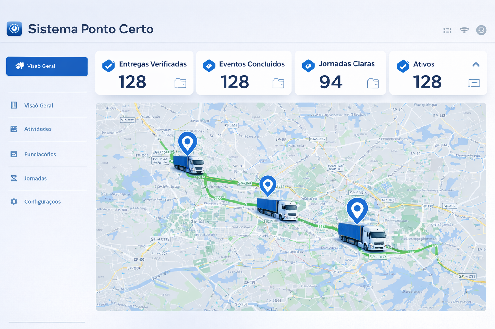

Conectamos o rastreador do seu veículo ao sistema de ponto. Sem celular, sem relógio, sem planilha. Conformidade CLT com rastreabilidade total — do GPS ao fechamento da folha.

Sem configuração complexa. O rastreador já instalado no caminhão começa a gerar o ponto automaticamente.
O rastreador no veículo registra ignição, deslocamento e localização. Nada novo para instalar — funciona com o que você já tem.
Horas normais, extras, noturnas, DSR e folgas calculadas automaticamente conforme a CLT e a convenção coletiva do setor.
PDF para o motorista assinar, Excel para o RH, painel para o gestor. Fechamento do mês com rastreabilidade total.
Feito para quem opera frota de verdade — cada funcionalidade nasceu da rotina do transporte rodoviário.
Interface para uso diário. Qualquer pessoa da equipe usa no primeiro acesso, sem treinamento longo.
OnixSat, TrucksControl, Global System e outros. Satelital ou GSM — funciona com o que você já tem instalado.
Trilha de auditoria completa. Em ação trabalhista, cada hora está documentada e rastreável.
DSR e folgas compensatórias calculados automaticamente conforme CLT e a rotina real do motorista.
Horas normais, extras, noturnas e indenizatórias calculadas automaticamente. Zero erro humano.
O veículo em movimento já é o registro. Sem depender de celular, aplicativo ou relógio de ponto.
Pensadas para quem opera frota e precisa de segurança máxima no fechamento da jornada.
Configure por ignição, deslocamento, velocidade ou tempo parado. Adapta-se à operação.
Jornada, descanso, DSR e adicionais conforme CLT e convenção coletiva. Rastreabilidade completa.
Por período, colaborador e veículo. Para gestão, RH e auditoria. Fechamento com um clique.
Filtros por empresa, filial, veículo e colaborador. Status de cada jornada em tempo real.
Conecta com OnixSat, TrucksControl, Global System. Mapeamento veículo–colaborador automático.
Notificações de descanso entre jornadas e pausas intrajornada direto no WhatsApp do gestor.
Relatório para o motorista assinar. Trilha completa: operação, fechamento e pagamento.
Atividades e paradas com classificação e endereço exato. Para contestação e auditoria.
Para atividades fora do veículo: carga, descarga, refeições. Complementa quando o GPS não cobre.
Solução que entende a rotina real do transporte, focando em agilidade e segurança jurídica.
Fale com a gente e veja como o Ponto Certo se encaixa na sua operação.
Reduza riscos e ganhe produtividade hoje mesmo.